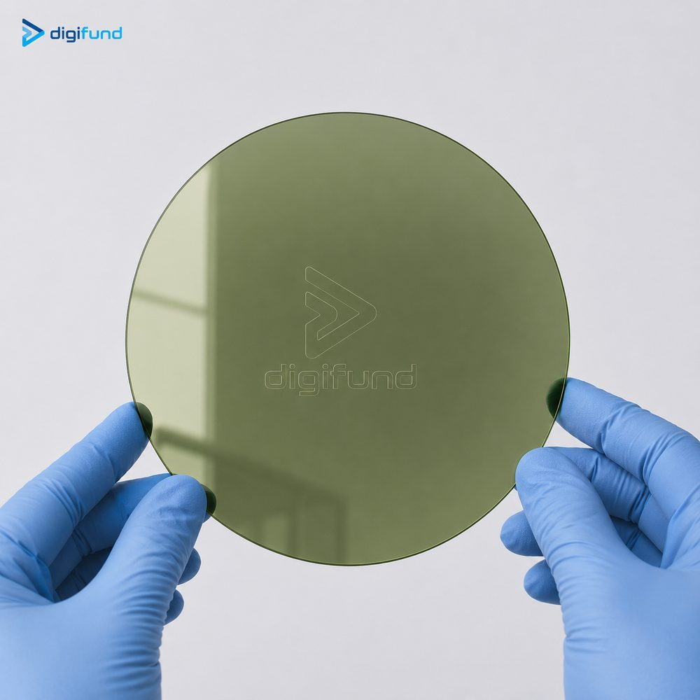

Nội dung chính
Contents
1. SiC là gì?
1. What is SiC?
Silicon carbide (SiC, cacbua silic) là hợp chất của silic và cacbon với tỉ lệ 1:1, liên kết rất bền nên cứng, chịu nhiệt và bền hoá học. Khác với silic, SiC là bán dẫn vùng cấm rộng: khoảng 3,2 eV với 4H-SiC so với 1,12 eV của silic. Vùng cấm rộng cho phép linh kiện chịu điện áp cao hơn, làm việc ở nhiệt độ cao hơn và có dòng rò thấp hơn.
Silicon carbide (SiC) is a 1:1 compound of silicon and carbon whose strong bonds make it hard, heat-resistant and chemically stable. Unlike silicon, SiC is a wide-bandgap semiconductor: about 3.2 eV for 4H-SiC versus 1.12 eV for silicon. A wide bandgap lets devices block higher voltages, operate at higher temperatures and leak less current.
Tinh thể SiC đơn tinh thể không kéo từ silic nóng chảy như silic CZ mà thường được nuôi bằng phương pháp thăng hoa - vận chuyển hơi (PVT) ở nhiệt độ trên 2000 °C. Tốc độ nuôi chậm và vật liệu rất cứng khiến việc cắt, mài và đánh bóng tốn kém, nên wafer SiC đắt hơn wafer silic cùng cỡ nhiều lần.
Single-crystal SiC is not pulled from a melt like CZ silicon; it is usually grown by physical vapour transport (PVT, sublimation) at temperatures above 2000 °C. Slow growth and the material's hardness make slicing, grinding and polishing costly, so a SiC wafer costs many times more than a silicon wafer of the same size.
2. Vì sao SiC quan trọng: công suất, xe điện, RF
2. Why SiC matters: power, EVs, RF
- Điện tử công suất. MOSFET và diode Schottky SiC chịu điện áp cao (thường từ 650 V đến 1700 V trở lên) với tổn hao đóng cắt thấp, cho phép bộ biến đổi nhỏ gọn và hiệu suất cao hơn linh kiện silic tương đương.
- Xe điện (EV). Bộ nghịch lưu kéo động cơ, bộ sạc trên xe và trạm sạc nhanh là thị trường lớn nhất của SiC hiện nay; hiệu suất cao hơn giúp tăng quãng đường hoặc giảm kích thước pin và hệ tản nhiệt.
- Năng lượng và công nghiệp. Inverter điện mặt trời, nguồn công nghiệp và hệ truyền động dùng SiC để giảm tổn hao.
- RF và GaN-on-SiC. Đế SiC bán cách điện là nền phổ biến cho transistor GaN HEMT dùng trong trạm gốc viễn thông, radar và vệ tinh. SiC có độ lệch mạng với GaN nhỏ hơn sapphire hay silic và dẫn nhiệt rất tốt, giúp tản nhiệt cho linh kiện công suất RF.
- Power electronics. SiC MOSFETs and Schottky diodes block high voltages (commonly 650 V to 1700 V and above) with low switching losses, enabling converters that are smaller and more efficient than equivalent silicon designs.
- Electric vehicles (EV). Traction inverters, on-board chargers and fast-charging stations are SiC's largest market today; higher efficiency extends range or shrinks the battery and cooling system.
- Energy and industry. Solar inverters, industrial power supplies and motor drives use SiC to cut losses.
- RF and GaN-on-SiC. Semi-insulating SiC is a common substrate for GaN HEMTs used in telecom base stations, radar and satellites. SiC has a smaller lattice mismatch to GaN than sapphire or silicon and conducts heat very well, which helps cool RF power devices.
3. So sánh SiC với silic
3. SiC compared with silicon
Bảng dưới đây dùng các giá trị gần đúng thường được trích dẫn trong giáo trình bán dẫn, ở nhiệt độ phòng. Giá trị thực tế thay đổi theo mức pha tạp, nhiệt độ và hướng tinh thể.
The table uses approximate values commonly cited in semiconductor textbooks, at room temperature. Real values vary with doping, temperature and crystal direction.
| Tính chấtProperty | Si | 4H-SiC | Ý nghĩaWhy it matters |
|---|---|---|---|
| Độ rộng vùng cấmBandgap | 1.12 eV | ~3.26 eV | Chịu nhiệt độ cao, dòng rò thấpHigh-temperature operation, low leakage |
| Điện trường đánh thủngBreakdown field | ~0.3 MV/cm | ~2.5–3 MV/cm | Lớp trôi mỏng hơn khoảng 10 lần cho cùng điện áp, điện trở dẫn thấp hơnDrift layer about 10× thinner for the same voltage, lower on-resistance |
| Độ dẫn nhiệtThermal conductivity | ~1.5 W/cm·K | ~3.7–4.9 W/cm·K | Tản nhiệt tốt, mật độ công suất caoBetter heat removal, higher power density |
| Vận tốc bão hoà điện tửElectron saturation velocity | ~1 × 10⁷ cm/s | ~2 × 10⁷ cm/s | Có lợi cho tần số caoHelps high-frequency operation |
| Độ linh động điện tửElectron mobility | ~1400 cm²/V·s | ~900 cm²/V·s | Si cao hơn; SiC bù lại bằng trường đánh thủngHigher in Si; SiC compensates with its breakdown field |
| Độ cứng MohsMohs hardness | ~7 | ~9.3 | Gia công, đánh bóng khó và tốn kém hơnHarder and costlier to machine and polish |
4. Polytype 4H và 6H
4. 4H and 6H polytypes
SiC có hàng trăm polytype, tức các cách xếp chồng lớp nguyên tử khác nhau với cùng thành phần hoá học. Ba loại thường gặp là 3C (lập phương), 4H và 6H (lục giác). Chỉ 4H và 6H được thương mại hoá rộng rãi dưới dạng wafer đơn tinh thể.
SiC exists in hundreds of polytypes, different stacking sequences of atomic layers with the same chemistry. The three most common are 3C (cubic), 4H and 6H (hexagonal). Only 4H and 6H are widely sold as single-crystal wafers.
- 4H-SiC — vùng cấm khoảng 3,26 eV, độ linh động điện tử cao hơn và ít dị hướng hơn 6H. Đây là lựa chọn tiêu chuẩn cho MOSFET, diode công suất và phần lớn đế GaN-on-SiC hiện nay.
- 6H-SiC — vùng cấm khoảng 3,0 eV, độ linh động thấp hơn và phụ thuộc mạnh vào hướng. Từng phổ biến cho LED và nghiên cứu ban đầu, nay chủ yếu dùng trong nghiên cứu vật liệu, một số ứng dụng quang và đế epitaxy đặc thù.
- 4H-SiC — bandgap about 3.26 eV, higher and less anisotropic electron mobility than 6H. It is the standard choice for MOSFETs, power diodes and most GaN-on-SiC substrates today.
- 6H-SiC — bandgap about 3.0 eV, lower and strongly direction-dependent mobility. Once common for LEDs and early research, it is now mainly used in materials research, some optical work and niche epitaxy substrates.
Nếu không có lý do riêng, hãy chọn 4H-SiC. Cách phân loại wafer theo vật liệu, phương pháp nuôi và pha tạp có trong bài phân loại silicon wafer.
Unless you have a specific reason, choose 4H-SiC. How wafers are classified by material, growth method and doping is covered in types of silicon wafer.
5. N-type dẫn điện và HPSI bán cách điện
5. Conductive N-type and semi-insulating HPSI
Cùng là 4H-SiC nhưng đế SiC chia thành hai nhóm chính theo tính dẫn điện, và hai nhóm này phục vụ hai thị trường khác nhau:
Within 4H-SiC, substrates fall into two main groups by conductivity, and the two serve different markets:
| N-type (dẫn điện)N-type (conductive) | HPSI (bán cách điện)HPSI (semi-insulating) | |
|---|---|---|
| Pha tạpDoping | Nitơ (N)Nitrogen (N) | Độ tinh khiết cao, không pha tạp chủ ý (một số loại SI khác dùng vanadi)High purity, no intentional dopant (other SI types use vanadium) |
| Điện trở suấtResistivity | Thấp, cỡ 0,01–0,1 Ω·cmLow, on the order of 0.01–0.1 Ω·cm | Rất cao, thường ≥ 10⁵ Ω·cmVery high, typically ≥ 10⁵ Ω·cm |
| Ứng dụng chínhMain use | Linh kiện công suất dọc (MOSFET, diode Schottky) cho EV, sạc, inverterVertical power devices (MOSFETs, Schottky diodes) for EVs, chargers, inverters | GaN HEMT trên SiC cho RF, vi sóng; nghiên cứu cần đế cách điệnGaN-on-SiC HEMTs for RF and microwave; research needing an insulating substrate |
| Vì saoWhy | Dòng điện chạy xuyên qua đế tới cực ở mặt sauCurrent flows through the substrate to a backside contact | Giảm tổn hao RF và điện dung ký sinh qua đếMinimises RF loss and parasitic capacitance through the substrate |
Đế P-type (pha nhôm) cũng tồn tại nhưng ít phổ biến hơn và chủ yếu dùng cho nghiên cứu. Hãy xác định linh kiện của bạn dẫn dòng dọc qua đế hay cần đế cách điện trước khi chọn loại.
P-type (aluminium-doped) substrates also exist but are less common and mostly used for research. Decide whether your device conducts vertically through the substrate or needs an insulating one before choosing the type.
6. Đường kính, độ dày và định hướng
6. Diameter, thickness and orientation
Wafer SiC nhỏ hơn silic nhiều vì nuôi tinh thể SiC lớn rất khó. Các cỡ thường gặp là 2 inch (50,8 mm), 3 inch (76,2 mm), 4 inch (100 mm) và 6 inch (150 mm); 6 inch là cỡ chủ lực của sản xuất linh kiện công suất, còn 8 inch (200 mm) đang được đẩy mạnh. Độ dày phổ biến là 350 µm và 500 µm. Hệ kích thước inch / mm được giải thích trong bài kích thước silicon wafer.
SiC wafers are much smaller than silicon because large SiC crystals are hard to grow. Common sizes are 2 inch (50.8 mm), 3 inch (76.2 mm), 4 inch (100 mm) and 6 inch (150 mm); 6 inch is the workhorse for power-device production, while 8 inch (200 mm) is ramping up. Common thicknesses are 350 µm and 500 µm. The inch / mm size system is explained in silicon wafer sizes.
Về định hướng, wafer 4H-SiC N-type cho epitaxy thường cắt lệch trục 4° (off-axis, nghiêng về hướng <11-20>) để lớp epi mọc theo kiểu bậc thang và giữ đúng polytype 4H. Wafer đúng trục (0001) on-axis thường dùng cho đế bán cách điện, epitaxy GaN và nghiên cứu. SiC có hai mặt khác nhau là mặt Si và mặt C; nhiều quy trình epi dùng mặt Si đã đánh bóng CMP.
On orientation, 4H-SiC N-type wafers for epitaxy are usually cut 4° off-axis (tilted toward <11-20>) so the epi layer grows in step-flow mode and keeps the 4H polytype. On-axis (0001) wafers are common for semi-insulating substrates, GaN epitaxy and research. SiC has two distinct faces, the Si-face and the C-face; many epi processes use a CMP-polished Si-face.
7. Phân hạng wafer SiC
7. SiC wafer grades
Wafer SiC thường được chia thành các hạng như Prime (Production), Research và Dummy. Tên gọi và ngưỡng cụ thể khác nhau giữa các nhà sản xuất, nhưng tiêu chí phân hạng thường gồm:
SiC wafers are usually sorted into grades such as Prime (Production), Research and Dummy. Names and exact thresholds differ between manufacturers, but grading criteria usually include:
- Mật độ micropipe (MPD) — lỗ rỗng xuyên tinh thể, khuyết tật đặc trưng của SiC; hạng Prime có MPD thấp nhất.
- Mật độ lệch mạng và tỉ lệ diện tích sử dụng được.
- Độ phẳng (TTV, bow, warp), độ nhám bề mặt và chất lượng đánh bóng.
- Độ đồng đều điện trở suất và tỉ lệ vùng sai polytype.
- Micropipe density (MPD) — hollow defects running through the crystal, characteristic of SiC; Prime grade has the lowest MPD.
- Dislocation density and usable-area percentage.
- Flatness (TTV, bow, warp), surface roughness and polish quality.
- Resistivity uniformity and the share of polytype inclusions.
Prime dùng cho epitaxy và chế tạo linh kiện; Research phù hợp thử quy trình và đào tạo; Dummy dùng để chạy máy, căn chỉnh hoặc thử nghiệm cơ học.
Prime is for epitaxy and device fabrication; Research suits process trials and teaching; Dummy is for tool runs, alignment or mechanical tests.
8. Đế SiC Digifund đang cung cấp
8. SiC substrates Digifund supplies

Danh mục wafer SiC của Digifund gồm polytype 4H-SiC và 6H-SiC, cỡ 2", 3", 4", 6" (tuỳ chọn 8"), loại N-type (pha nitơ), bán cách điện HPSI và P-type, phân hạng Prime – Research/Dummy, định hướng (0001) on-axis hoặc lệch 4°, độ dày 350 µm hoặc 500 µm. Các mã tiêu biểu:
Digifund's SiC wafer range covers 4H-SiC and 6H-SiC polytypes, 2", 3", 4" and 6" sizes (8" as an option), N-type (nitrogen), semi-insulating HPSI and P-type, Prime – Research/Dummy grades, (0001) on-axis or 4° off-axis orientation, and 350 µm or 500 µm thickness. Representative items:
| Sản phẩmProduct | SKU | Polytype | LoạiType | Kích thướcSize | Độ dàyThickness | Định hướngOrientation | Đánh bóngPolish | Phân hạngGrade |
|---|---|---|---|---|---|---|---|---|
| SiC 3" HPSI Prime | DG-SiC-030001 | 4H-SiC | Bán cách điện (HPSI)Semi-Insulating (HPSI) | 3" | 350 µm | — | — | Prime |
| SiC 3" N-type | DG-SiC-030002 | 4H-SiC | N-type (Nitrogen) | 3" | 350 µm | — | 1 mặtSingle side | Prime |
| SiC 4" N-type | DG-SiC-040001 | 4H-SiC | N-type (Nitrogen) | 4" | 500 µm | Off-axis 4° | 2 mặtDouble side | Prime |
| SiC 6" N-type | DG-SiC-060001 | 4H-SiC | N-type (Nitrogen) | 6" | 500 µm | — | — | Prime |
9. Thông số cần gửi khi hỏi báo giá
9. Specifications to send for a quote
Để nhận báo giá đế SiC chính xác, hãy gửi đủ các thông tin sau:
For an accurate SiC substrate quote, send the following:
- Polytype (4H hoặc 6H) và loại: N-type, HPSI hay P-type.
- Đường kính (inch / mm), độ dày và dung sai.
- Định hướng: on-axis (0001) hay lệch trục (ví dụ 4°), và hướng lệch.
- Khoảng điện trở suất yêu cầu.
- Đánh bóng một mặt hay hai mặt, mặt Si hay mặt C, có cần bề mặt epi-ready không.
- Phân hạng (Prime / Research / Dummy) và yêu cầu MPD nếu có.
- Kiểu flat, số lượng, mục đích sử dụng và thời gian cần hàng.
- Polytype (4H or 6H) and type: N-type, HPSI or P-type.
- Diameter (inch / mm), thickness and tolerance.
- Orientation: on-axis (0001) or off-axis (for example 4°), and the off-cut direction.
- Required resistivity range.
- Single- or double-side polish, Si-face or C-face, and whether an epi-ready surface is needed.
- Grade (Prime / Research / Dummy) and any MPD requirement.
- Flat style, quantity, intended use and required delivery date.
Câu hỏi thường gặp
Frequently asked questions
Wafer SiC khác wafer silic thế nào?How is a SiC wafer different from a silicon wafer?
SiC có vùng cấm khoảng 3,2 eV (so với 1,12 eV của Si), điện trường đánh thủng cao khoảng 10 lần và dẫn nhiệt tốt hơn khoảng 2–3 lần. Nhờ vậy linh kiện SiC chịu điện áp và nhiệt độ cao hơn, phù hợp điện tử công suất và RF. Đổi lại, wafer SiC nhỏ hơn và đắt hơn nhiều.
SiC has a bandgap of about 3.2 eV (versus 1.12 eV for Si), a breakdown field about 10 times higher and roughly 2–3 times better thermal conductivity. SiC devices therefore handle higher voltage and temperature, suiting power electronics and RF. In return, SiC wafers are smaller and far more expensive.
Nên chọn 4H-SiC hay 6H-SiC?Should I choose 4H-SiC or 6H-SiC?
Chọn 4H-SiC cho hầu hết ứng dụng: linh kiện công suất, GaN-on-SiC và đa số nghiên cứu linh kiện, vì 4H có vùng cấm rộng hơn và độ linh động điện tử cao hơn. 6H-SiC chủ yếu dùng khi quy trình hoặc đề tài nghiên cứu yêu cầu riêng.
Choose 4H-SiC for most uses: power devices, GaN-on-SiC and most device research, because 4H has a wider bandgap and higher electron mobility. 6H-SiC is mainly used when a process or research project specifically calls for it.
Khi nào cần đế SiC HPSI thay vì N-type?When do I need HPSI SiC instead of N-type?
Dùng HPSI (bán cách điện) cho linh kiện RF như GaN HEMT, nơi đế cần cách điện để giảm tổn hao tín hiệu. Dùng N-type cho linh kiện công suất dọc như MOSFET và diode Schottky, nơi dòng điện chạy xuyên qua đế.
Use HPSI (semi-insulating) for RF devices such as GaN HEMTs, where an insulating substrate reduces signal loss. Use N-type for vertical power devices such as MOSFETs and Schottky diodes, where current flows through the substrate.
Digifund cung cấp wafer SiC cỡ nào?What SiC wafer sizes does Digifund supply?
Danh mục của Digifund gồm 2", 3", 4" và 6" (tuỳ chọn 8"), polytype 4H và 6H, loại N-type, HPSI và P-type, độ dày 350 µm hoặc 500 µm. Các mã tiêu biểu là SiC 3" HPSI Prime, SiC 3" N-type, SiC 4" N-type và SiC 6" N-type.
Digifund's range covers 2", 3", 4" and 6" (8" as an option), 4H and 6H polytypes, N-type, HPSI and P-type, at 350 µm or 500 µm thickness. Representative items are SiC 3" HPSI Prime, SiC 3" N-type, SiC 4" N-type and SiC 6" N-type.
Cần đế SiC cho dự án của bạn?
Need SiC substrates for your project?
Gửi polytype, loại dẫn điện, đường kính, độ dày, định hướng và số lượng cần, đội ngũ kỹ thuật Digifund sẽ tư vấn và gửi báo giá wafer SiC phù hợp.
Send the polytype, conductivity type, diameter, thickness, orientation and quantity you need, and Digifund's technical team will advise and quote suitable SiC wafers.
Nhận tư vấn kỹ thuậtGet technical advice Xem catalog waferView wafer catalog